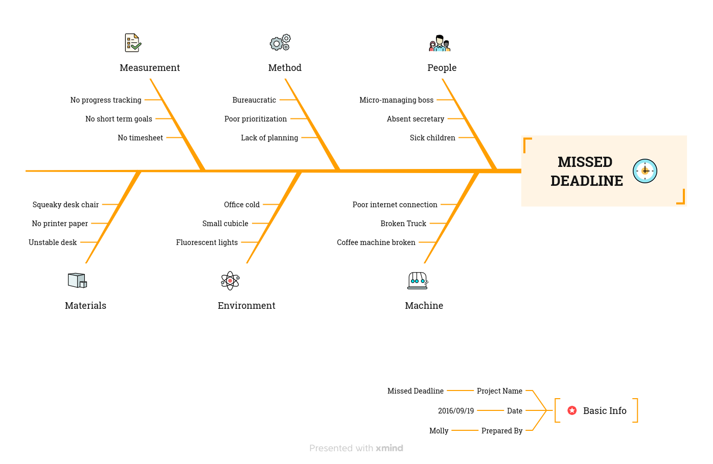
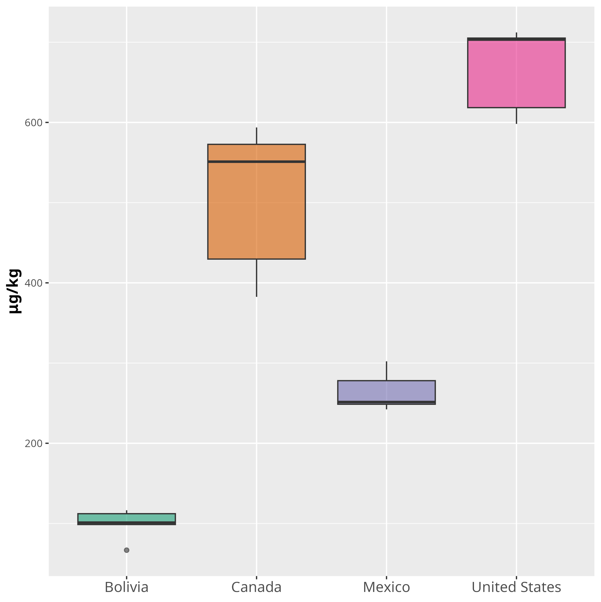

The purpose of this presentation is to show the use of animations in a Reveal.js presentation written in Emacs org-mode and exported with org-reveal.
Thank you.
#+ATTR_REVEAL: above the content.#+ATTR_REVEAL: :frag (fade-in appear roll-in fade-in) :frag_idx (1 2 3 4)The code used is show below
#+ATTR_HTML: :class h-content flex-list grow justify-evenly
#+ATTR_REVEAL: :frag (fade-in appear roll-in fade-in) :frag_idx (1 2 3 4)
- To use ...
- The elements ...
- The code ...
- The animation ..
Notes
#+ATTR_REVEAL: :frag t is used above the list the whole list will be displayed at once.growshrinkfade-outhighlight-<color>:frag (fade-in highlight-red) :frag_idx (1 1) does not work as expected.#+ATTR_REVEAL: :frag t and #+ATTR_HTML: can not be combined. (see next slide for an alternative.)#+ATTR_REVEAL: :frag (style1 style2) :frag_idx (x y) should be placed below the attribute #+ATTR_HTML: used to modify the list.The code used is shown below:
#+ATTR_HTML: :class h-content-09 flex-list grow justify-evenly fragment
#+ATTR_REVEAL: :frag (fade-in fade-in fade-in) :frag_idx (1 2 3)
- The items ...
- If we ...
- The code ...
- For elements ...
fragment block (exported as a class).HTML attribute should be used specifying the style and the indexThe code for the figure at the bottom is shown below:
#+ATTR_HTML: :class fade-in text-body-xs
#+ATTR_HTML: :data-fragment-index 8
#+begin_fragment
#+ATTR_HTML: :class h-content-02
#+caption: Landscape 1
[[file:personal/images/landscape-1.jpg]]
#+end_fragment
Figure 1: Landscape 1

Figure 2: Mind map template from Xmind (Missing deadline)

Figure 3: Estimated microplastic consumption in Milk (μg/kg) for selected countries in America. Data was collected every 5 years between 1990-2018 (Source: Kaggle)
The code used to insert the image on the left is shown below
#+ATTR_HTML: :data-preview-image personal/images/Plot_full.png :data-preview-fit scale-down
#+ATTR_HTML: :class h-content-085
#+caption: Estimated ...
[[file:personal/images/Plot_subset.png]]
data-preview-fit argument include:
scale-down: Fit the lightboxcontain: Scale without croppingcover: Cover even if croppingscale-on-hover was written which increases the size of the box when the mouse hovers over.mt-7. The value was set by trial-and-error.scale-on-hover {
transition: transform 0.3s ease;
}
.scale-on-hover:hover {
transform: scale(1.1);
}
qfade would change the opacity of the content where it is applied.
The CSS code for the custom class qfade is shown below:
.reveal .fragment.qfade {
opacity: 1;
visibility: inherit;
}
.reveal .fragment.qfade.visible {
opacity: 0.3;
visibility: inherit;
}
It is implemented as follows:
#+ATTR_HTML: :class qfade
#+ATTR_HTML: :data-fragment-index 2
#+begin_fragment
- The custom class ..
- The above ...
#+end_fragment
Created by Saul SL